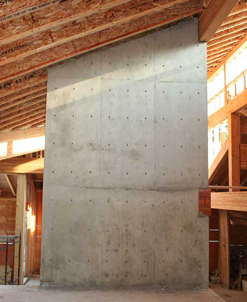

Air tight homes require a dedicated source of fresh air. In most cases a Heat Recovery Ventilator alone is sufficient to draw stale air from the house and bring in fresh exterior air while keeping heat within the home.
In our project, ventilation was also intended to distribute the warm air produced by the wood stoves and solar gain from the clerestory windows. Cold air returns were therefore placed along the peaks of the ceilings. Vents are situated in the floors at the periphery of the rooms.
Our preferred control setting has been to use the HRV primarily and the air handler as a slave. The latter only operates when the HRV is on. HRV speed and frequency is adjusted manually as required depending on house occupation and activity.
Finally, the wood stoves each have a dedicated fresh air intake.
